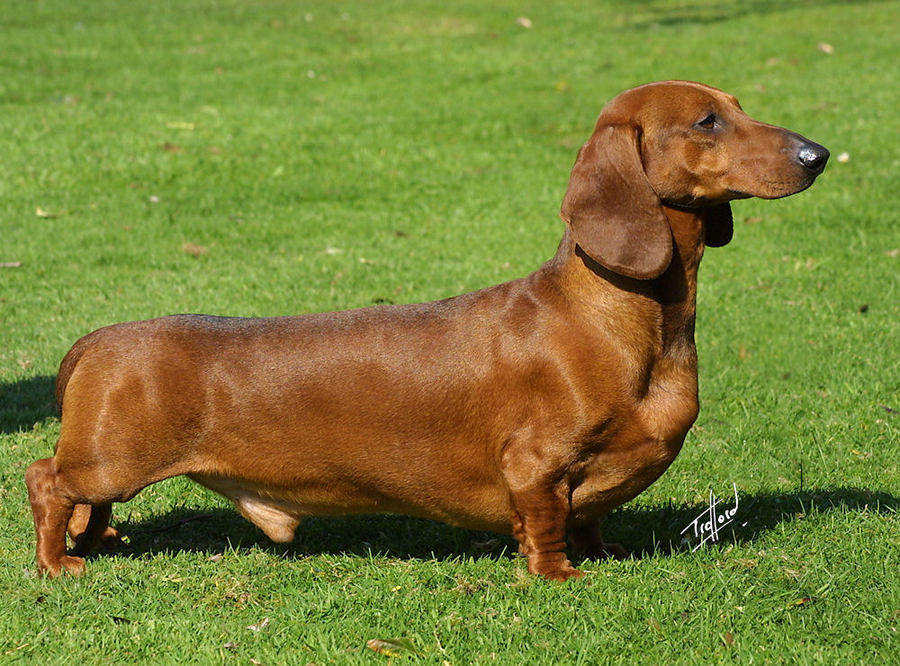

ტაქსა

ტაქსა — სანადირო ძაღლების ჯიში. იყენებენ მელიის, აცვის, ენოტისებრი ძაღლის სოროში მოსაპოვებლად.თავისი ფორმის წყალობით ჯიშს შესწევს უნარი ნებისმიერ სოროში შეძვრეს და გამორეკოს ცხოველი. აქვს გრძელი ტანი, მოკლე ფეხები (გაფარჩხული წინა კიდურები). სოლისებრი თავი, დაკიდებული ყურები და ხმლის ფორმის კუდი. ტაქსა ეგვიპტეში ცნობილი იყო ჯერ კიდევ ძვ. წ. 2 ათ. წლის წინათ. მეცნიერები თვლიან რომ ტაქსას წინაპრები იყვნენ ძველი ეგვიპტური ძაღლები გრძელი ტანით და მოკლე კიდურებით. როგორც ჯიში ჩამოყალიბდა XVIII საუკუნის შუა წლებში გერმანიაში. განასხვავებენ მსხვილ, საშუალო და ჯუჯა (ქონდარა) ტიპის ტაქსას. არსებობს მისი სხვადასხვა სახეობა: სტანდარტული და მინიატურული, ასევე მოკლებეწვიანი და გრძელბეწვიანი ტაქსა. შეფერილობაც მრავალგვარია შავი, წითური, ვეფხვისფერი, თეთრი ყავისფერი ლაქებით და სხვა. გავრცელებულია ბევრ ქვეყანაში როგორც დეკორატიული ძაღლი..